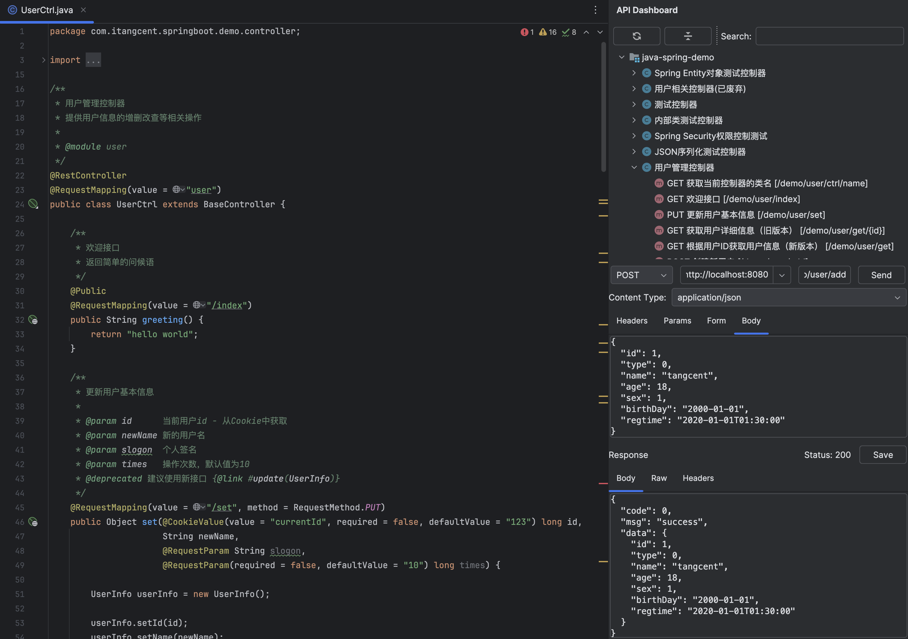

Call API 是一个轻量级的 API 调试工具，直接集成在 IDE 中，让您无需切换到外部应用即可快速测试和调试 API。它提供了简洁的界面和便捷的操作流程，特别适合开发过程中的日常 API 调试需求。
Call Api
| 规则的 key | 规则目标(上下文) | 版本 | 规则描述 |
|---|---|---|---|
| http.call.before | request | v1.9.0+ | HTTP 请求前回调，可用于自动登录、添加通用请求头等 |
| http.call.after | request&response | v1.9.0+ | HTTP 请求后回调，可用于响应数据处理、日志记录等 |
点击 规则配置 查看更多配置选项。